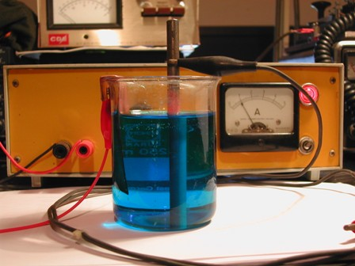
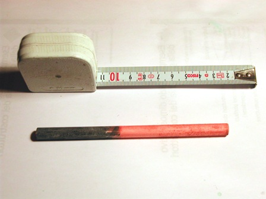
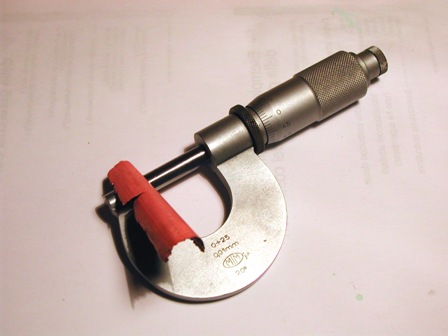

In lab fa un freddo cane, come tutti gli inverni, ma qualcosa di vagamente chimico bisogna pur fare ogni tanto, altrimenti sembra un lab abbandonato!
Chiaro che le sintesi sono OFF, proviamo quindi qualcosa di semplice nel locale (adibito alla radio/elettronica) che posso provvisoriamente riscaldare.
Chi, giocando con i primissimi rudimenti della chimica, non ha mai provato a ramare un pezzo di ferro?
Ad ogni piccolo chimico, per quanto sprovveduto, sarà capitato di immergere un chiodo in una soluzione di solfato di rame e di aver visto che il ferro si ricopre immediatamente di una patina rossa di rame.
Che bello! dice subito... ma poi scopre che basta un colpo di dito e la patina di rame che sembrava aderente vien via praticamente tutta, lasciando sul dito un segnaccio nero e il chiodo grigio come prima.
Chimicamente succede che il ferro, metallo meno nobile, si ossida e passa in soluzione come FeSO4 e il CuSO4 si riduce e si attacca come metallo al supporto in ferro.
Tutta colpa, o merito, della posizione reciproca dei due elementi nella serie elettrochimica (basta dare un'occhiata in rete su questo tema e si scoprirà anche il significato di "nobiltà" dei metalli).
E i giocolieri chimici, dopo aver osservato questo fenomeno, hanno puntualmente constatato che la ramatura fatta in tal modo è del tutto insoddisfacente.
Per ramare più seriamente, assicurando un deposito durevole e con perfetta aderenza, serve la ramatura galvanica, o galvanostegia.
Ma fatta in quali condizioni? Ho provato a fare qualche esperimento, cercando sul Turco della Hoepli alla voce "Ramatura - Bagni al solfato".
(Il Turco della Hoepli, ovvero il "Nuovissimo ricettario chimico", è un librone di 1800 pagine di ricette industriali di ogni tipo, per lo più d'epoca ma anche abbastanza recenti; in pratica è una miniera da esplorare. L'avevo comprato in tempi migliori, assieme ai sette volumi del Villavecchia... meno male che l'avevo fatto, sono davvero libri cult!).
Il librone mi dice di provare con una soluzione di 200/250 g/l di CuSO4, acidificando con H2SO4 per circa 50 g/l, a temperatura di 20-50° e con una densità di corrente di 2-5 A/dm2 senza agitazione, mentre con forte agitazione si può salire a 5-15 A/dm2.
Ho preparato la soluzione "galvanostegica" e scaldato a circa 40° e poi ho pulito per bene, molto per bene (o almeno CREDEVO di averlo fatto) con spazzola di acciaio e HCl un tondino di ferro, del quale ho calcolato la superficie, 24 cm2.
Come alimentatore ho usato quello che avevo costruito appositamente per usi elettrolitici, del quale posso regolare a piacimento la corrente.
Per evitare che il ferro si rami chimicamente, ho alimentato gli elettrodi (anodo una piastrina di rame, catodo il tondino di ferro) e POI ho immerso quest'ultimo nella soluzione, mantenendo una corrente di circa 4 A/dm2, sotto buona agitazione.

Il tondino si è ramato magnificamente in pochi minuti e la pellicola sembrava bella consistente.
Provando a graffiarla con un taglierino, ho visto che era veramente una laminetta formata, ma che una volta tagliata lungo una direttrice si sfilava dal tondino.
Insomma, una aderenza del cavolo!
Ecco la laminetta staccata, e mi son preso pure la briga di misurarla: in poco tempo era già cresciuta a 2,5 centesimi di spessore.


Delusione totale! Dove sta il problema?
Il problema sta in gran parte nella pulizia del supporto, che deve essere assolutamente perfetta.
Vogliamo ricorrere a metodi sbrigativi? Qui si tratta solo di un test, quindi mano alla lima e alla carta vetrata!
La seconda volta ho veramente messo a vivo il ferro, risciacquandolo e immergendolo immediatamente nella soluzione con le modalità dette prima.
All'inizio ho anche dato una robusta botta di corrente, circa 15 A/dm2, per prevenire per quanto possibile la labile deposizione chimica.
Dopo pochi minuti la ramatura sembrava come la precedente, ma stavolta il rivestimento NON si staccava dal supporto. Molto bene!
Su questo rame depositato si potrebbe fare anche una brasatura a stagno, per esempio per saldarci un filo, senza tema che si stacchi. Conclusione:
A parte la galvanostegia industriale, che ha tutte le sue accortezze appunto "industriali", per fare una degna ramatura casalinga del ferro ho verificato che servono:
- una pulizia PERFETTA del pezzo (la cosa in assoluto più importante)
- una corrente iniziale molto forte (sempre riferita in A/dm2), con decisa agitazione; poi, avvenuta la prima deposizione bene aggrappata, si può diminuire
- la giusta temperatura e composizione del bagno, ma questi sono elementi meno critici.
Ho detto qualcosa di nuovo? Assolutamente no... ma mi piace verificare di persona.
Sempre il buon Turco, mi suggerisce ora di provare una ramatura chimica di un altro metallo usando un metodo e soprattutto un sale inedito che mi stuzzica: prima o poi voglio provare!